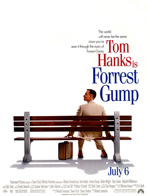

Forest Gamp
Genres: Comedy|Drama
Realise date: on June 23 in 1994
Forrest Gump, while not intelligent, has accidentally been present at many historic moments, but his true love, Jenny Curran, eludes him.
|
Rain man
Genres: Drama
Realise date: on december 19 in 1988
Stars: Dustin Hoffman, Tom Cruise, Valeria Golino
Selfish yuppie Charlie Babbitt's father left a fortune to his savant brother Raymond and a pittance to Charlie; they travel cross-country.
|
|
The Green Mile
Genres: Science Fiction
Realise date: on december 10 in 1999
Stars: Tom Hanks, Michael Clarke Duncan, David Morse
The lives of guards on Death Row are affected by one of their charges: a black man accused of child murder and rape, yet who has a mysterious gift.
|
Just my luck
Genres:Comedy
Realise date:on may 12 in 2006
Stars:Lindsay Lohan, Chris Pine, Samaire Armstrong
Manhattanite Ashley is known to many as the luckiest woman around. After a chance encounter with a down-and-out young man, however, she realizes that she's swapped her fortune for his.
|